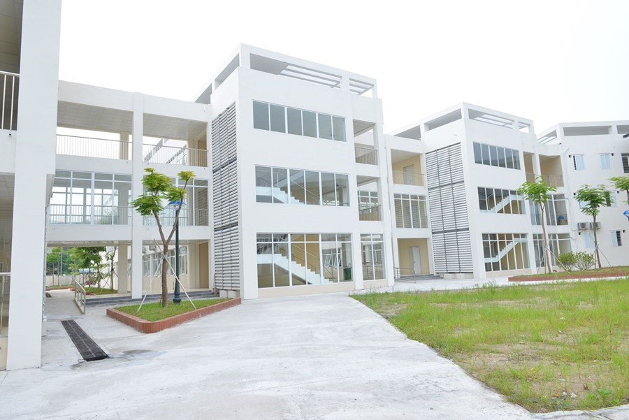

Trường THPT Xuân Phương được thành lập theo Quyết định số 2044/QĐ-UBND ngày 26/4/2018 của UBND Thành phố Hà Nội. Theo đó, trường THPT Xuân Phương là trường THPT công lập trực thuộc Sở GD&ĐT Hà Nội.
Trường được xây dựng trên khu đất có diện tích 12.000 m2, với tổng mức đầu tư xây dựng 122 tỷ đồng (thời điểm năm 2018), trường tọa lạc tại khu đô thị mới xinh đẹp thuộc phường Xuân Phương (Tasco Xuân Phương), quận Nam Từ Liêm, TP Hà Nội. Cảnh quan sư phạm Nhà trường đẹp đẽ, giao thông thông thoáng, khung cảnh yên bình. Cơ sở vật chất Nhà trường khang trang hiện đại và đồng bộ với đầy đủ các phòng thí nghiệm thực hành của các môn học như Ngoại ngữ, Tin học, Vật lý, Hóa học, Sinh học, KTNN, KTCN, … nhà giáo dục thể chất, sân chơi, bãi tập. Các thiết bị giảng dạy và học tập đều mới và hiện đại, tất cả các phòng học, phòng thí nghiệm thực hành đều có máy chiếu projector và máy tính phục vụ giáo viên và học sinh. Về đội ngũ: Giáo viên của Nhà trường là những thầy cô biên chế chuyển từ các trường THPT công lập trong và ngoài Thành phố Hà Nội. Trong thành phố chuyển về, có các thầy cô từ các trường THPT: Yên Hòa, Phan Đình Phùng, Mê Linh, Phú Xuyên A, Ngô Thị Nhậm, Thượng Cát, Hoài Đức A, Quảng Oai, Ngô Quyền, Quang Minh, Tân Lập, … Các trường THPT ngoài tỉnh như: Chuyên Vĩnh Phúc, Chuyên Ninh Bình, Chuyên Thái Bình, Chuyên Sơn La, Hải Dương, Hưng Yên, … Tỷ lệ giáo viên có trình độ thạc sĩ trở lên chiếm hơn 70%, trong đó có cả trình độ Tiến sĩ, đây là một tỷ lệ giáo viên trên chuẩn rất cao của Thành phố Hà Nội hiện nay. Ngay trong năm học đầu tiên, các thầy cô giáo đã đạt nhiều thành tích trong công tác như giải Nhất cấp Quốc gia về phong trào, Bằng khen cấp Thành phố về các hoạt động tập thể, giải về giáo viên dạy giỏi cấp Cụm trường THPT thuộc Nam – Bắc Từ Liêm. Với học sinh, Nhà trường quan tâm giáo dục toàn diện, song rất chú trọng tới việc đầu tư vào điều kiện học tập ngoại ngữ với giáo viên người bản ngữ, mở lớp tiếp cận chương trình quốc tế, tạo cơ hội để các em đạt được những chứng chỉ tiếng Anh quốc tế ngay sau khi tốt nghiệp THPT. Đồng thời, ngoài giờ học chính khóa, Nhà trường rất quan tâm tới việc luyện rèn các kỹ năng sống cần thiết để giúp các em học sinh sẵn sàng bước vào thế giới hội nhập. Trên nền tảng vừa nêu, Nhà trường luôn khuyến khích và tạo cơ hội tối đa để các thầy cô giáo phát huy hết tiềm năng, năng lực, sở trường của mình trong hoạt động nghề nghiệp, các em học sinh được tạo cơ hội để bộc lộ hết năng lực, trí tuệ, sở trường ở các môn học, ở các hoạt động giáo dục trong những năm tháng học tập tại Nhà trường. Đây là điều hết sức quan trọng để các em chủ động định hướng được nghề nghiệp trong tương lai sau này. Với cảnh quan sư phạm khang trang, hiện đại, với đội ngũ thầy cô giáo nhiệt tình, tân tâm, hết lòng vì sự tiến bộ của học trò, trường THPT Xuân Phương đang ngày càng có những bước đi vững chắc, hứa hẹn sẽ là một trong những ngôi trường có vị thế của ngành Giáo dục Thủ đô, đem lại niềm tin, niềm tự hào cho các bậc phụ huynh khi có con em theo học. Từ mái trường này, các thế hệ học sinh sẽ lớn lên, trưởng thành, trở thành những công dân có ích, đáp ứng được sự kì vọng của nhân dân đối với ngành giáo dục trong bối cảnh hiện nay.